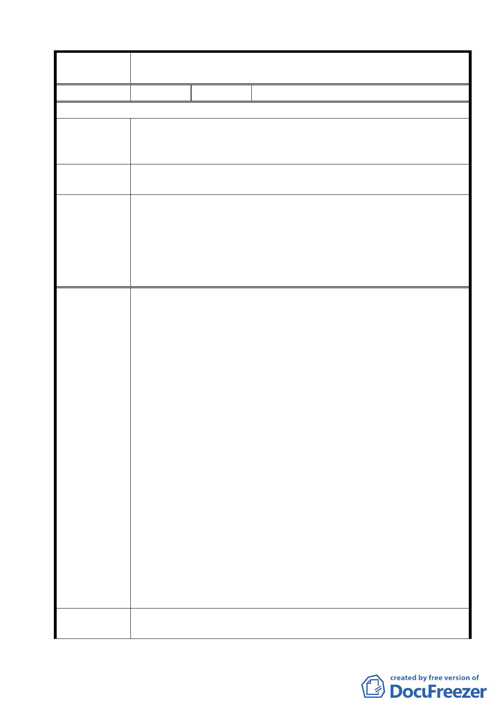

案名
變更臺北市士林區陽明山山仔后地區第二種住宅區為特定住宅區
細部計畫案
編號
10 陳情人 歐漢平
96/7/16 陳情意見
根據計畫書第 1 頁「計畫起源」，變更案的法令依據：都市計畫法
陳情理由一 第 27 條第 1 項第 4 款：為配合中央、直轄市或縣市興建之重大設
施時。
建議辦法
若依此令，我們根據計畫書的內容推論，「重大設施」應指的是區
內的「原美軍宿舍的保存」， 若有其他的法令定義， 請解釋。
委員會議
決議
1.有關本項陳情市府業說明本案變更之法令依據包括都市計畫法
第 27 條第 1 項第 4 款以及文化資產保存法第 56 條。
2.本案除市府本次會議所送修正計畫書第 2-20 頁（四）文字修正
為「建築基地地面高度設計：建築基地地面設計以維持原地形地
面為原則，但經整地後基地地面高度不得超過 1.2 公尺」外，其
餘依市府本次會議所送修正計畫書內容通過。
細部計畫案以「特定住宅區」之名陳述了「計畫地區範圍」 「土
地使用分區管制」「都市設計管制」; 但依都市計畫法第 22 條，
下列款項並未表明:
1.第 2 款：居住密度及容納人口。
2.第 4 款：事業及財務計畫。
3.第 5 款：道路系統。美軍宿舍區內，例如愛富 2、3 街道等，都
不是公用道路，台銀拍賣土地後，土地所有權人可否重劃道路，
以利開發案的規劃。
4.第 6 款：地區性之公共設施用地—細部計畫案的附件 「都市
設計管制要點」第二項特定住宅區（一） 所特別規定應予保存
陳情理由二 的聯誼社、福利社、士官住宅， 及第四項「其他規定」所提之
樹木銀行，是公共設施用地嗎? （計畫書第 18 與 23 頁）。
5.第 7 款：其他基礎設施: 水、電、污水處理等; 由未來開發者或
所有權人負責建設，或政府負責?預用量也應規定， 以不危及現
有用戶的需要限制。污水處理僅於第四項其他規定中籠統提
到，應依預進住之人口，做更詳細的規定;是否集中處理? 地點
選定何處？
計畫書第 23 頁; 「其他規定」 中第九款 「須於基地內處理達
放流水標準始可排放」，須更清楚的解釋，沒依照都市計畫法第
建議辦法
22 條第二款「居住密度及容納人口」作分析， 如何定污水排量
的指標?
1.這個細部計畫案未依都市計畫法第 22 條的規定，以細部計畫書
及細部計畫圖一一列明事項，很明顯有違法之處， 依法需要作
21